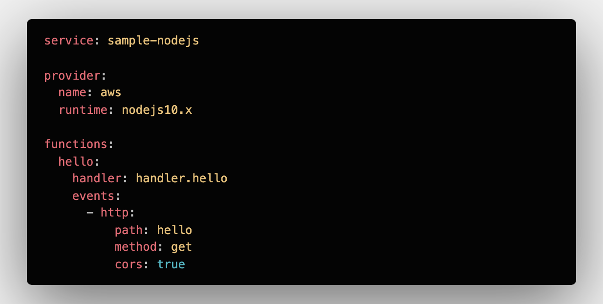
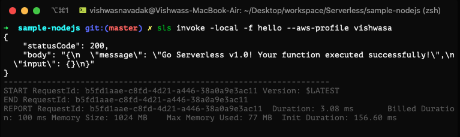

In one of my early posts I explained how we can set up an API gateway for a serverless lambda which can talk to DynamoDB. If you have ever deployed lambda and other serverless services manually, you know the pain in setting things up to work together and managing multiple environments. AWS CloudFormation templates will help to lift off some burden of the manual deployment, but it doesn't solve everything. In this post, I will explain how do we can setup lambdas and other AWS services by writing a simple YAML config and automating its deployment using Github Actions.
Serverless Framework
This framework allows us to create and deploy serverless functions to multiple Cloud providers like AWS, Azure and Google Cloud. In AWS, it simplifies CloudFormation templates with YAML configurations. The framework comes as an npm package, so you just have to install it globally.
npm install -g serverlessTo set up a boilerplate project for Nodejs Endpoint, just run
sls create -t aws-nodejs --path sample-nodejs --name sample-nodejsThis command will create a project with handler.js, which will be a source for your Nodejs endpoint & serverless.yml, which has the YAML configs for the deployment. To deploy the Nodejs as the endpoint, you need to specify the API gateway configuration in the YAML file. It will look like the below screenshot.

Once you are done with writing the code for your endpoint, you can test it locally by running the serverless invoke function.
sls invoke -local -f hello
The YAML configuration is customizable to include most the AWS services, permissions, and policies. Complete list of possible YAML configuration are available in serverless.yml reference guide.
For deploying the services to AWS, you need to have your AWS profile SSH access set up in your local machine. Post setting it up, run the below command to deploy.
sls deploy --aws-profile vishwasaEvery time you change your code, you need to run deploy command to push it to the server. To automate your deployment from your Github repo, you can use Github Actions.
Github Actions
Actions let you create your event-based workflows within your repositories. To automate the deployment of your Serverless Resources, you can use the action created by Serverless Framework.
Workflows can be added to any Github repository in two ways. 1) Going to the Actions tab on your Github repo, Select or create a new workflow. 2) Creating a YAML file main.yml in your local repository under the folder .github/workflows/.
First, we need to add our AWS credentials to Github Secrets for deployment. Environment variables can be added to Github in Secrets section under the Settings tab of your repository.
The workflow configuration for automated deployment of serverless resources to AWS is shown below.
name: Serverless Deployement Example
# Triggers the action everty time there is a code push to the master branch
on:
push:
branches:
- master
# Specify what jobs to run
jobs:
deploy:
name: deploy
runs-on: ubuntu-latest
env: #Setup environmental variables for serverless deployment
AWS_ACCESS_KEY_ID: ${{ secrets.AWS_ACCESS_KEY_ID }}
AWS_SECRET_ACCESS_KEY: ${{ secrets.AWS_SECRET_ACCESS_KEY }}
steps:
# Use github defaut action to trigger action in this repo. Mandatory
# https://help.github.com/en/actions/automating-your-workflow-with-github-actions/configuring-a-workflow#using-the-checkout-action
- uses: actions/checkout@v1
- name: npm install dependencies
run: npm install
- name: Serverless
uses: serverless/github-action@v1.53.0
with:
args: deployOnce you have added the YAML configuration for your Github action to the repository, it will trigger the deployment pipeline and deploys your code to AWS.
Things to Note
If you need a dedicated CI/CD setup along with Monitoring, Alerts and Debugging, it is available in the Pro version of Serverless Framework.
Github Actions are not only meant to be CI/CD. They are capable of automating Code Reviews, PR Merges, etc. A complete list of open-sourced Github Actions can be found in their marketplace.
Github Action is free and unlimited for public repositories. But has a limit of 2000 minutes of runtime per minute for Private Repositories.
Sample project with Github Action setup can be found in my github repository.